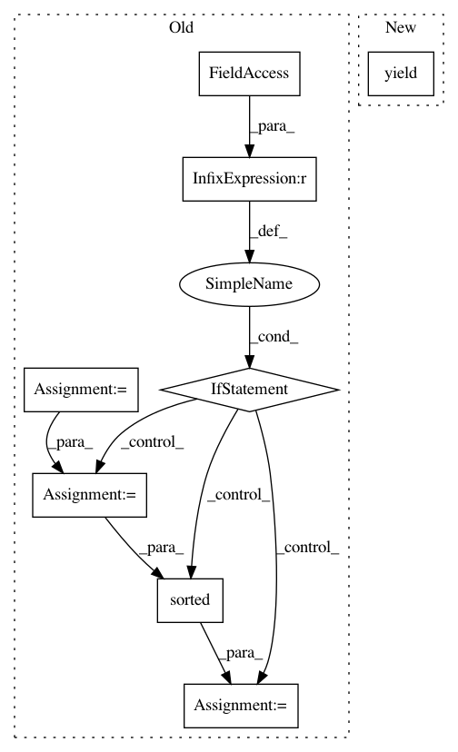

9bd7ddae2acd48f26344b7b6e905ab3ab7a81a60,docsim.py,SimilarityABC,__iter__,#SimilarityABC#,47
Before Change
for docNo, doc in enumerate(self.corpus):
// compute cosine similarity against every other document in the collection
allSims = self[doc]
// return either all similarities as a list, or only self.numBest most similar, depending on settings from the constructor
if self.numBest is None:
yield allSims
else:
tops = [(docNo, sim) for docNo, sim in enumerate(allSims) if sim > 0]
tops = sorted(tops, key = lambda item: -item[1]) // sort by -sim => highest cossim first
yield tops[ : self.numBest] // return at most numBest top 2-tuples (docId, docSim)
//endclass SimilarityABC
class Similarity(SimilarityABC):
Compute cosine similary against a corpus of documents. This is done by a full
sequential scan of the corpus. If your corpus is reasonably small (fits in RAM),
After Change
and yield the result.
for docNo, doc in enumerate(self.corpus):
yield self[doc]
//endclass SimilarityABC
class Similarity(SimilarityABC):
In pattern: SUPERPATTERN
Frequency: 3
Non-data size: 8
Instances
Project Name: RaRe-Technologies/gensim
Commit Name: 9bd7ddae2acd48f26344b7b6e905ab3ab7a81a60
Time: 2010-02-03
Author: piskvorky@92d0401f-a546-4972-9173-107b360ed7e5
File Name: docsim.py
Class Name: SimilarityABC
Method Name: __iter__
Project Name: PetrochukM/PyTorch-NLP
Commit Name: dd2eaf6c174fdd757514bc06d1063e5f9c6bb4a0
Time: 2019-10-20
Author: petrochukm@gmail.com
File Name: torchnlp/samplers/bucket_batch_sampler.py
Class Name: BucketBatchSampler
Method Name: __iter__
Project Name: RaRe-Technologies/gensim
Commit Name: 3fd9809dfdfcf47bf34a9f9a780277abaae76105
Time: 2010-02-03
Author: radimrehurek@seznam.cz
File Name: docsim.py
Class Name: SimilarityABC
Method Name: __iter__